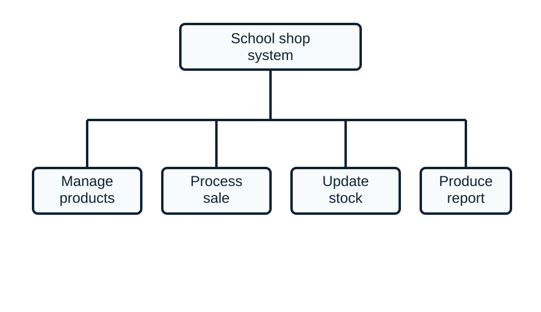
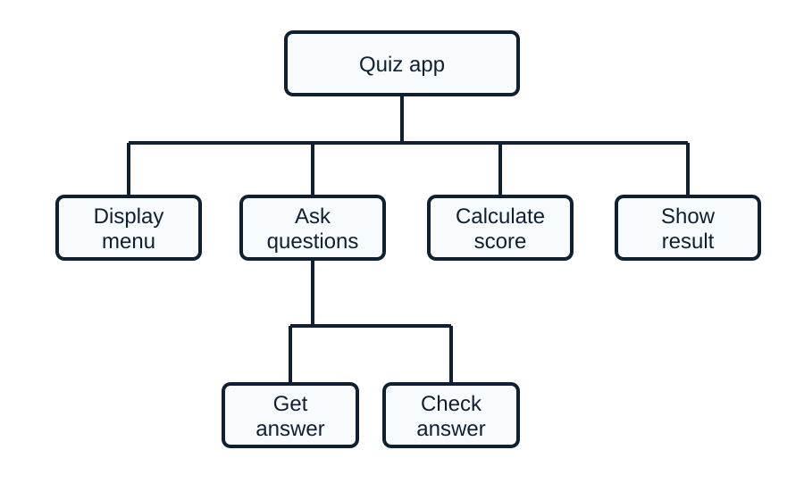
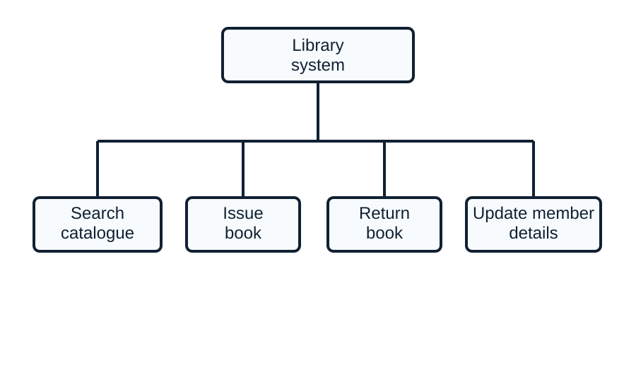
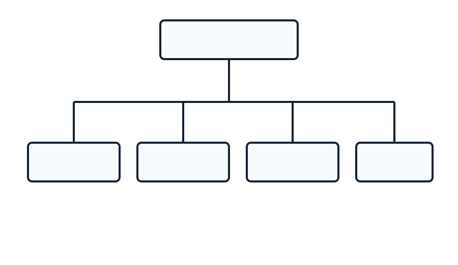
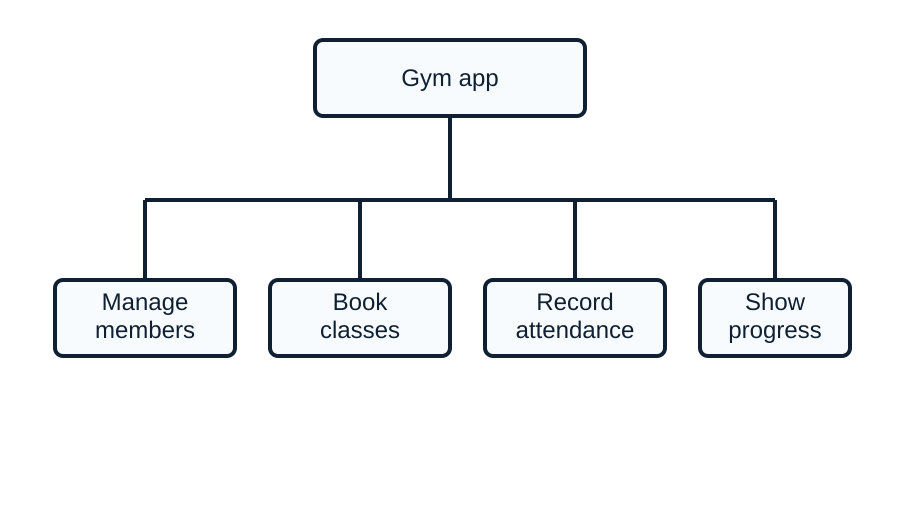
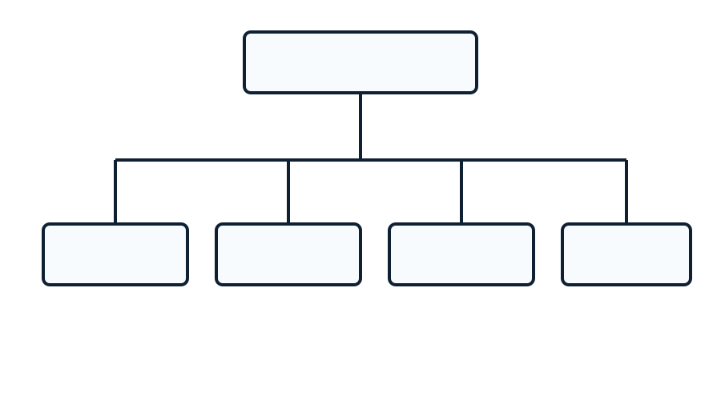

Practise using structure diagrams to show how a problem can be divided into parts.
1) Describe the purpose of a structure diagram. (3 marks)
Mark scheme
1 mark for each correct point:
A structure diagram shows how a problem is broken into smaller parts.
It shows the relationship between the main problem and sub-problems.
It can help plan the structure of a solution before coding.
It supports decomposition.
Accept any other valid point.
2) A program manages a sports club membership system. Identify four sections that could appear in a structure diagram for this system. (4 marks)
Mark scheme
Award 1 mark for each relevant section:
Add or edit member details.
Record payments.
Show training sessions.
Record attendance.
Produce reports.
Send messages or reminders.
Accept any other valid point.
3) Explain how a structure diagram can help when designing a program. (3 marks)
Mark scheme
1 mark for each correct point:
It gives a clear overview of the whole problem.
It shows smaller modules or sub-problems that can be developed separately.
It helps identify what each part of the solution should do.
It can make the program easier to organise and test.
Accept any other valid point.
4) A structure diagram for a quiz app has sections for menu, questions, score and results. Explain why this is an example of decomposition. (3 marks)
Mark scheme
1 mark for each correct point:
The quiz app has been broken down into smaller sections.
Each section represents a separate part of the overall problem.
Each section can be designed or tested separately.
The sections can be combined to create the full quiz app.
Accept any other valid point.
5) A school shop is creating a program to manage products, process sales, update stock and produce a daily report. Draw a structure diagram for this system. (5 marks)
Mark scheme
Award up to 5 marks:
Places School shop system or equivalent as the main/root module.
Includes a module for managing products.
Includes a module for processing sales.
Includes a module for updating stock.
Includes a module for producing a report, with clear hierarchy and connecting lines.
Accept any other valid equivalent layout.

Example structure diagram for the school shop system
6) A quiz app has a main menu, asks questions, calculates a score and shows a result. The questions section is split into getting the user's answer and checking the answer. Draw a structure diagram for the app. (6 marks)
Mark scheme
Use the banded mark scheme first, then the indicative content below to decide the final mark.
Mark range
Quality of response
Expected content
5-6
Clear, accurate and well-developed response.
Applies the answer to the scenario or task and covers most of the relevant points from the indicative content.
3-4
Some accurate explanation with relevant points.
Covers several relevant points, but the response may lack detail, balance or clear application.
1-2
Limited response with basic understanding.
Includes one or two relevant points, but may be brief, generic or partly inaccurate.
0
No creditworthy response.
No relevant answer, or the response is too unclear to award marks.
Indicative content:
Places Quiz app or equivalent as the main/root module.
Includes a display menu module.
Includes an ask questions module.
Includes calculate score and show result modules.
Splits ask questions into get answer and check answer sub-modules.
Uses clear connecting lines to show the hierarchy.
Accept any other valid equivalent layout.

Example structure diagram for the quiz app
7) A library system lets users search the catalogue, issue a book, return a book and update member details. Draw a structure diagram for this system. (5 marks)
Mark scheme
Award up to 5 marks:
Places Library system or equivalent as the main/root module.
Includes a search catalogue module.
Includes an issue book module.
Includes a return book module.
Includes an update member details module, with clear hierarchy and connecting lines.
Accept any other valid equivalent layout.

Example structure diagram for the library system
8) A gym app is being decomposed into modules for managing members, booking classes, recording attendance and showing progress. Complete the missing labels on the structure diagram in Figure 1. (5 marks)

Figure 1: Gym app structure diagram with missing labels
Mark scheme
1 mark for each correct label:
Top-level module labelled Gym app or equivalent.
Lower module labelled Manage members or equivalent.
Lower module labelled Book classes or equivalent.
Lower module labelled Record attendance or equivalent.
Lower module labelled Show progress or equivalent.

Completed gym app structure diagram
9) A music streaming app is being planned with modules for searching songs, playing music, managing playlists and showing recommendations. Complete the missing labels on the structure diagram in Figure 2. (5 marks)

Figure 2: Music app structure diagram with missing labels
Mark scheme
1 mark for each correct label:
Top-level module labelled Music streaming app or equivalent.
Lower module labelled Search songs or equivalent.
Lower module labelled Play music or equivalent.
Lower module labelled Manage playlists or equivalent.
Lower module labelled Show recommendations or equivalent.